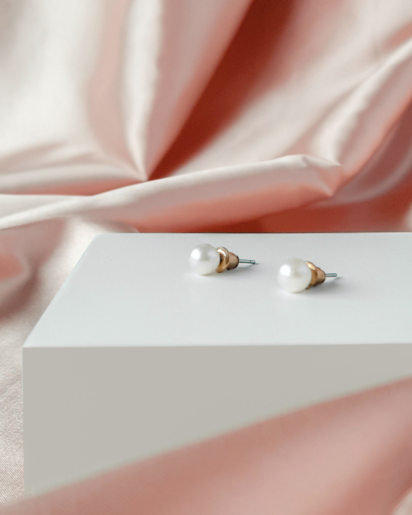

Minimalist Jewelry: Less is More
Minimalist jewelry is all about simplicity and clean lines. Our collection features pieces that are perfect for everyday wear, with understated designs that make a statement without being overwhelming. From delicate stud earrings to simple pendant necklaces, our minimalist jewelry collection offers a range of options that will complement any outfit. These pieces are versatile and timeless, making them a great investment for any jewelry collection.